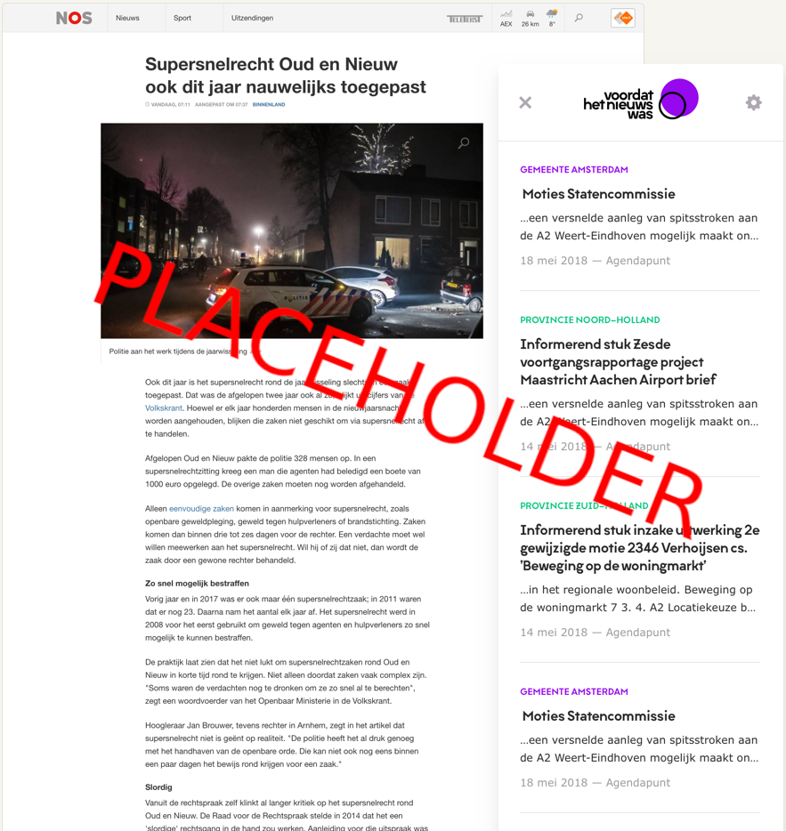

Voordat het nieuws was
zoekt stukken van de raad en staten bij het laatste nieuws
Installeer Installeer Installeer

zoekt stukken van de raad en staten bij het laatste nieuws
Installeer Installeer InstalleerDe app werkt als browser plugin en is alléén actief op de ondersteunde websites.
Op basis van de inhoud van een artikel bepaalt het relevante zoekwoorden, die het vervolgens als zoekopdracht gebruikt in de Open Stateninformatie en Open Raadsinformatie. De app toont de gevonden stukken bij het artikel.
Bij vragen of opmerkingen kan contact worden opgenomen met Oberon, de ontwikkelaar van deze app:
www.oberon.nlDe app maakt gebruik van de Open Stateninformatie en Open Raadsinformatie.
Deze gegevens zijn beschikbaar gesteld door de betrokken provincies en gemeenten.
De app Voordat het nieuws was is ontwikkeld door Oberon als gevolg van de App Challenge 2018. In deze wedstrijd daagde de Open State Foundation in samenwerking met de betrokken provincies ontwikkelaars uit om een toepassing te bedenken die gebruik maakt van de Open Stateninformatie.
Oberon heeft de wedstrijd gewonnen en heeft de app met het beschikbaar gestelde ontwikkelbudget gerealiseerd.
Oberon heeft de broncode van deze app beschikbaar gesteld als Open Source.
GitHub